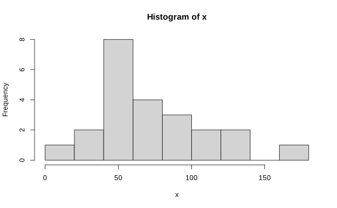
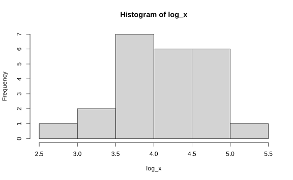
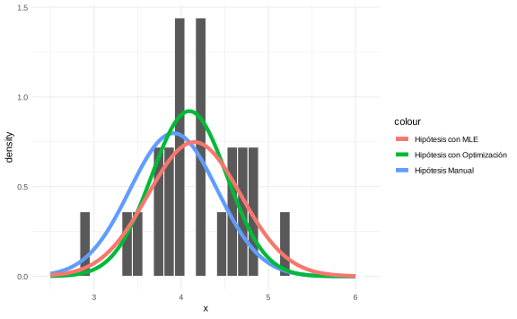
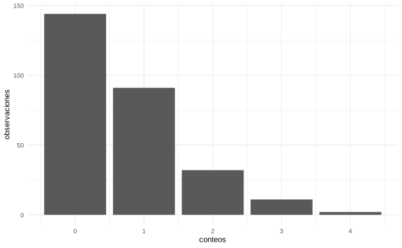
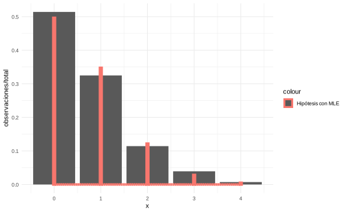

Capítulo 13 Bondad de ajuste
En los ejemplos que hemos visto siempre hemos necesitado una distribución de referencia que nos permita calcular los cuantiles correspondientes. Sin embargo, es posible que ese supuesto no se cumpla, o que la distribución no sea normal por ejemplo. En estos casos primero se debe de considerar una prueba de hipótesis para revisar las condiciones de nuestros datos. Una familia de problemas no paramétricos surgen a partir de esta observación.
13.1 Prueba \(\chi^2\)
Suponga que se tienen datos categóricos los cuales el rango de la variable asume un número finito de categorías o estados
Ejemplo: Por ejemplo suponga que tienen la variable de tipo de sangre en la población, entonces
| Categoría | Tipo de sangre |
|---|---|
| 1 | A |
| 2 | B |
| 3 | AB |
| 4 | O |
Suponga que tenemos \(k\) categorías,
\[p_i = \mathbb P[\text{Categoría }i],\;i=1,\dotsc,k\]
y \(\sum_{i=1}^kp_i = 1\). Sea \(p_1^0,\dotsc,p_k^0\) probabilidades propuestas, \(\sum_{i=1}^kp_i^0\).
Suponga \[ H_0: p_i = p_i^0\text{ para } i=1,\dots,k\] \[ H_1: p_i \ne p_i^0\text{ para al menos un }i\]
Ejemplo: Siguiendo con el ejemplo, suponga que se quiere hacer la siguiente hipótesis de la población
| Categoría | Tipo de sangre | Hipótesis (\(p_i ^{0}\)) |
|---|---|---|
| 1 | A | 1/3 |
| 2 | B | 1/8 |
| 3 | AB | 1/24 |
| 4 | O | 1/2 |
Suponga una muestra de \(n\) elementos. \(N_i\) el número de elementos en la categoría \(i\), \(\sum _{i=1}^kN_i = n\). Note que \[(N_1,\dots,N_k)\sim\text{Multinomial}(p_1, \dots, p_k)\]
Nota: Una distribución multinomial tiene la siguiente forma:
\[\begin{align*} \operatorname{Pr}\left(X_{1}=x_{1}, \ldots, X_{k}=x_{k}\right) = \left\{\begin{array}{rlr} \binom {n} {x_{1}, \ldots, x_{k}} p_{1}^{x_{1}} \cdots p_{k}^{x_{k}} & \text { if } x_{1}+\cdots+x_{k}=n \\ 0 & \text { otherwise. } \end{array}\right. \end{align*}\]
donde
\[\begin{equation*} \binom{n}{x_{1}, \ldots, x_{k}} =\frac{n !}{x_{1} ! x_{2} ! \cdots x_{k} !} \end{equation*}\]
El número esperado de elementos en la celda \(i\) es \(n\cdot p_i^0\). Si \(N_i -np_i^0\) es cercano a 0 para todo \(i\), es indicador de que \(H_0\) es cierto.
El estadístico \(\chi^2\) se define como
\[Q = \sum_{i=1}^k\dfrac{(N_i-np_i^0)^2}{np_i^0}.\]
En 1900, Karl Pearson probó que cuando \(n\) es grande y \(k\) es “relativamente” pequeño con respecto a \(n\),
\[Q \xrightarrow[H_0]{}\chi^2_{k-1}.\]
En la prueba \(\chi^2\), \(\delta\): Rechazo \(H_0\) si \(Q\geq c\). Dado un nivel de significancia \(\alpha_0\), \[\mathbb P_{H_0}[Q\geq c]\le \alpha_0\implies c = F^{-1}_{\chi^2_{k-1}}(1-\alpha_0)\]
Nota: El estadístico \(Q\) se puede interpretar de la forma
\[Q = \sum_{i=1}^k\dfrac{(\text{observado}_{i} - \text{esperado}_{i})^2}{\text{esperado}_{i}}.\]
Reglas empíricas
La aproximación \((Q\sim\chi^{k-1})\) funciona muy bien si \(np_i^0\geq 5\).
La aproximación es buena si \(np_i^0\ge 1.5\), \(i=1,\dots,k\).
Ejemplo: Continuando con el ejemplo se observan 6004 personas de raza blanca en California y se obtiene este resultado
| \(\text{Grupo}\) | \(\text{Observado}\) (\(n_i\)) | \(\text{Teórico}\) (\(p_i ^{0}\)) |
|---|---|---|
| \(\text A\) | \(2162\) | \(1/3\) |
| \(\text B\) | \(738\) | \(1/8\) |
| \(\text {AB}\) | \(228\) | \(1/24\) |
| \(\text O\) | \(2876\) | \(1/2\) |
Queremos probar \(H_0: p_i = p_i^0\), \(i=1,2,3,4\).
\(np_1^0 = 6004\cdot1/3 = 2001.3\).
\(np_2^0 = 6004\cdot1/8 = 750.5\).
\(np_3^0 = 6004\cdot1/24 = 250.2\).
\(np_4^0 = 6004\cdot1/2 = 3002\).
\[Q = \dfrac{(2162-2001.3)^2}{2001.3} + \dfrac{(738-750.5)^2}{750.5} + \dfrac{(228-250.2)^2}{250.2} + \dfrac{(2876-3002)^2}{3002} = 20.37.\]
El valor-p es \(F_{\chi^2_{3}}(20.37) = 1.42\times 10^{-4}\).
En R el test se puede hacer con la función chisq.test:
observado <- c(2162, 738, 228, 2876)
probabilidad_hipotetica <- c(1 / 3, 1 / 8, 1 / 24, 1 / 2)
chisq.test(x = observado, p = probabilidad_hipotetica)##
## Chi-squared test for given probabilities
##
## data: observado
## X-squared = 20.359, df = 3, p-value = 0.000143Rechazamos la hipótesis de que las probabilidades teóricas de tipo de sangre son igual al valor hipotético.
Ejemplo. Sean \(0<X_i<1\), \(i=1,2,\dots,100\). \(X_i~f\), \(f\) una densidad continua.
\[H_0: f=\text{Unif}(0,1) \text{ vs } H_1: f \ne\text{Unif}(0,1). \]
Se definen 20 niveles, que corresponden a intervalos de [0,1]. Una observación \(X_j\) está en el nivel \(i\) si
\[\dfrac{i-1}{20}\leq X_j <\dfrac{i}{20}\].
| \(\text{Nivel}\) | \(1\) | \(2\) | \(\cdots\) | \(20\) |
|---|---|---|---|---|
| \(\text{Frecuencia}\) | \(N_1\) | \(N_2\) | \(\cdots\) | \(N_{20}\) |
donde \(N_i\) es el número de observaciones que están en el intervalo \(i\).
| \(i\) | \(X_i\) | \(\text{Grupo}\) |
|---|---|---|
| \(1\) | \(X_1\) | \(2\) |
| \(2\) | \(X_2\) | \(4\) |
| \(3\) | \(X_3\) | \(17\) |
| \(\vdots\) | \(\vdots\) | \(\vdots\) |
| \(100\) | \(X_{100}\) | \(20\) |
Las hipótesis anteriores son equivalentes a \[H_0: p_i = \dfrac{1}{20}, \;i=1,\dots,20.\]
\(np_i^0 = 100\cdot\dfrac 1{20} = 5,\;i = 1,\dots,20\).
Entonces \[Q = \sum_{i=1}^{20}\dfrac{(N_i-5)^2}{5}.\]
Rechazamos la hipótesis \(f = \text{Unif}(0,1)\) si \(Q>\chi^2_{19}(1-\alpha_0)\).
Nota: Este método funciona para cualquier tipo de distribución. El siguiente procedimiento se debe seguir para estos casos
Particione en \(k\) subintervalos disjuntos la recta real o cualquier intervalo en el que esté contenidos sus datos de modo que este tenga probalidad 1. Es decir, todos sus datos deben estar contenidos en este intervalo.
Determine las probabilidades \(p_i ^{0}\) hipotéticas que se asignará cada subintervalo. El valor teórico para cada subintervalo será \(n p_i ^{0}\)
Cuente las observaciones que caen en cada subintervalo. Llame este valor \(N_i\)
Calcule \(Q\) según el procedimiento anterior y tome una decisión con respecto a la hipótesis nula. La hipótesis nula deberá tener una distribución \(\chi ^{2}\) con \(k-1\) grados de libertad.
Ejemplo. Supongamos que tenemos 23 datos de unas partes mecánicas para automóvil. Se registró el sus tiempos de vida útil.
Trabajemos con el ejemplo de log-tiempo de vida de los dispositivos.
x <- c(
17.88, 28.92, 33, 41.52, 42.12, 45.6, 48.8, 51.84, 51.96, 54.12, 55.56,
67.8, 68.44, 68.64, 68.88, 84.12, 93.12, 98.64, 105.12, 105.84, 127.92,
128.04, 173.4
)
log_x <- log(x)

Suponga que se quiere hacer la prueba de hipótesis
\[H_0: f = N(\log(50),0.25) \quad vs \quad H_1: f \neq N(\log(50),0.25)\]
Seleccione \(k\) tal que
\[ p_i^0 = \mathbb P[\text{log-tiempo perteneza al }i\text{-ésimo intervalo}]\geq \dfrac 5{23}\approx \dfrac 14. \]
Podemos tomar \(k = 4\) grupos (intervalos regulares)
Grupo 1: \((F^{-1}_{H_0}(0),F^{-1}_{H_0}(0.25)] = (-\infty,3.575]\).
Grupo 2: \((F^{-1}_{H_0}(0.25),F^{-1}_{H_0}(0.5)] = (3.575,3.912]\).
Grupo 3: \((F^{-1}_{H_0}(0.5),F^{-1}_{H_0}(0.75)]=(3.912,4.249]\).
Grupo 4: \((F^{-1}_{H_0}(0.75),F^{-1}_{H_0}(1))=(4.249,+\infty)\).
Entonces solo para efectos de construir la partición
cortes <- qnorm(
p = c(0, 1 / 4, 2 / 4, 3 / 4, 1),
mean = log(50),
sd = sqrt(0.25)
)
(intervalos <- cut(c(0, 10), breaks = cortes))## [1] (-Inf,3.57] (4.25, Inf]
## Levels: (-Inf,3.57] (3.57,3.91] (3.91,4.25] (4.25, Inf]## [1] (-Inf,3.57] (-Inf,3.57] (-Inf,3.57] (3.57,3.91] (3.57,3.91] (3.57,3.91]
## [7] (3.57,3.91] (3.91,4.25] (3.91,4.25] (3.91,4.25] (3.91,4.25] (3.91,4.25]
## [13] (3.91,4.25] (3.91,4.25] (3.91,4.25] (4.25, Inf] (4.25, Inf] (4.25, Inf]
## [19] (4.25, Inf] (4.25, Inf] (4.25, Inf] (4.25, Inf] (4.25, Inf]
## Levels: (-Inf,3.57] (3.57,3.91] (3.91,4.25] (4.25, Inf]## (-Inf,3.57] (3.57,3.91] (3.91,4.25] (4.25, Inf]
## 3 4 8 8| \(G_1\) | \(G_2\) | \(G_3\) | \(G_4\) |
|---|---|---|---|
| \(3\) | \(4\) | \(8\) | \(8\) |
\[Q = \dfrac{(3-23\cdot1/4)^2}{23\cdot 1/4} + \dfrac{(4-23\cdot1/4)^2}{23\cdot 1/4}+\dfrac{(8-23\cdot1/4)^2}{23\cdot 1/4} + \dfrac{(8-23\cdot1/4)^2}{23\cdot 1/4}= 3.609.\]
El valor-\(p\) corresponde a \(F_{\chi^2_3}(3.609) = 0.307\).
##
## Chi-squared test for given probabilities
##
## data: conteos
## X-squared = 3.6087, df = 3, p-value = 0.3069Nota: La función chisq.test si no se llama con ninguna hipótesis nula p,
esta asume que \(p = 1/n\) para cada categoría. En este caso como son 4
categorías sería \(1/4\).
Con un nivel de 30%, no se rechaza la hipótesis de normalidad bajo esa escogencia de parámetros.
Nota: Otra escogencia de paramétros podría aceptar la hipótesis nula.
13.2 Pruebas \(\chi^2\) con hipótesis parametrizadas
Ejemplo. En el caso anterior, probamos que la distribución Normal con media \(\log(50) = 3.912023\) y desviación estándar \(0.25\) no funcionabapara nuestros datos.
La pregunta es entonces, ¿Cuáles serían los parámetros correctos? ¿Los datos pertenecen a una familia normal?
En esta sección veremos una técnica para lidiar con este problema.
Escriba cada \(p_i\) \((i=1,\dots,k)\) como
\[p_i = \pi_i(\theta),\quad \theta = (\theta_1,\dots,\theta_s)\]
Es decir, cada probabilidad es igual a una función particular con respecto a algunos paramétros \(\mathbf{\theta}\).
Asuma que \(s<k-1\). Las entradas de \(\theta\) no se pueden escribir como función de ellas mismas. Además \(\sum \pi_i(\theta) = 1\).
\[H_0: p_i = \pi_i(\theta)\text{ para algún parámetro }\theta\in \Omega,\;i=1,\dots,k\]
\[H_1: \text{lo anterior no es cierto}\]
El estadístico es
\[Q = \sum_{i=1}^k\dfrac{[N_i-n\pi_i(\hat\theta)]^2}{n\pi_i(\hat\theta)}\]
con \(\hat\theta\) el MLE de \(\theta\) usando la distribución de \((N_1,\dots,N_k)\).
Teorema. Bajo \(H_0\), conforme \(n\to \infty\), \(Q\to \chi^2_{k-1-s}\).
Ejemplo. Suponga que se tienen 3 grupos y defina una parámetro \(0<\theta<1\). El análisista hace el siguiente supuesto:
\[\begin{align*} p_1 &= \theta^2=\pi_1(\theta) , \\ p_2 &= 2\theta(1-\theta)=\pi_2(\theta),\\ p_3 &= (1-\theta)^2=\pi_3(\theta). \end{align*}\]
Se observa que \(p_1+p_2+p_3 = \theta^2 + 2\theta (1-\theta +(1-\theta)^2 =[\theta+(1-\theta)]^2 = 1\).
\(s = 1\), \(\Omega = [0,1]\).
Como la distribución de \((N_1,\dots,N_k)\underset{H_0}{\sim} \text{Multinomial}(n,p_1,\dots,p_k)\), se obtiene la verosimilitud
\[L (\theta|N_1,\dots,N_k) = {n \choose {N_1\cdots N_k}}(\pi_1(\theta))^{N_1}\cdots(\pi_k(\theta))^{N_k}\]
\[\ell = \log (L) \propto N_1\ln\pi_1(\theta)+\cdots+N_k\ln\pi_k(\theta)\]
Retomando el ejemplo,
\[\begin{align*} \ln L(\theta) & \propto N_1\ln \theta^2 + N_2 \ln 2\theta(1-\theta) + N_3\ln (1-\theta)^2\\ & = (2N_1+N_2)\ln \theta + (2N_3+N_2)\ln(1-\theta) + N_2\ln 2 \end{align*}\]
\[\dfrac{\partial \ln L(\theta)}{\partial\theta} = \dfrac{2N_1+N_2}{\theta}-\dfrac{2N_3+N_2}{1-\theta} = 0 \implies \hat\theta = \dfrac{2N_1+N_2}{2n}\]
Con esto se calcula \(\pi_1(\hat \theta)\),\(\pi_2(\hat \theta)\),\(\pi_3(\hat \theta)\) y \(Q\).
Ejemplo (Partes de automóvil). Sean \(X_1,\dots,X_n\sim f\), \(H_0: f = N(\mu,\sigma^2)\) donde \(\mu\) y \(\sigma^2\) son desconocidos.
Vamos a construir las funciones \(\pi\) tratando de ajustar los cuantiles que habíamos definido antes con los valores teóricos de \(\mu\) y \(\sigma\). Entonces,
\[\pi_i(\mu,\sigma^2) = \int_{a_i}^{b_i}(2\pi\sigma^2)^{-1/2}\exp\left(-\dfrac 1{2\sigma^2}(x-\mu)^2\right)dx = \Phi\left(\dfrac{b_i-\mu}{\sigma}\right)-\Phi\left(\dfrac{a_i-\mu}{\sigma}\right)\]
Asumiendo que la i-ésima partición es \((a_i,b_i)\), los 4 intervalos son
\[(-\infty,3.575],(3.575,3.912],(3.912,4.249], (4.249,+\infty).\]
La verosimilitud es
\[\ln L(\mu,\sigma^2) = N_1\ln \pi_1(\mu,\sigma^2)+\cdots+N_4\ln\pi_4(\mu,\sigma^2)\]
y se optimiza numéricamente.
cortes <- qnorm(
p = c(0, 1 / 4, 2 / 4, 3 / 4, 1),
mean = log(50),
sd = sqrt(0.25)
)
log_versomilitud <- function(par, cortes, log_x) {
G <- length(cortes)
mu <- par[1]
sigma <- par[2]
pi <- numeric()
for (k in 1:(G - 1)) {
pi[k] <- pnorm(q = cortes[k + 1], mean = mu, sd = sigma) -
pnorm(q = cortes[k], mean = mu, sd = sigma)
}
conteos <- cut(log_x, breaks = cortes)
conteos <- summary(conteos)
l <- -sum(conteos * log(pi))
return(l)
}
sol <- optim(
par = c(0, 1),
fn = log_versomilitud,
cortes = cortes,
log_x = log_x
)
sol$par## [1] 4.0926455 0.4331326Para otra solución, considere el siguiente teorema:
Teorema (1954). \(X_1,\dots, X_n\sim F_\theta\), \(\theta: p\)-dimensional. \(\hat\theta_n\) es el MLE de \(\theta\) (basado en \(X_1,\dots, X_n\)). Tome una partición de \(\mathbb R\) con \(k\) intervalos disjuntos \((I_1,\dots,I_k)\). \(N_i\) es la cantidad de \(X_i\)’s que pertenecen a \(I_i\) y \(\pi_i(\theta)=\mathbb P_\theta[X_i\in I_i]\), \[Q' = \sum_{i=1}^k\dfrac{[N_i-n\pi_i(\hat\theta_n)]^2}{n\pi_i(\hat\theta_n)}\]
Bajo las condiciones de regularidad del MLE, si \(n\to\infty\), el cdf de \(Q'\) bajo \(H_0\) está entre \(\chi^2_{k-p-1}\) y \(\chi^2_{k-1}\).
Del ejemplo anterior (tiempo de vida de los dispositivos), tome \(\hat\mu = \bar X_n =4.1506137\) y \(\hat\sigma^2 = \dfrac{s_n^2}{n} = 0.5332049\).
\(\pi_1(\hat\mu,\hat\sigma^2) = \Phi\left(\dfrac{3.575-4.15}{0.2843^{1/2}}\right)-\Phi(-\infty) = 0.14\).
\(\pi_2(\hat\mu,\hat\sigma^2) = \Phi\left(\dfrac{3.912-4.15}{0.2843^{1/2}}\right) - \Phi\left(\dfrac{3.575-4.15}{0.2843^{1/2}}\right) = 0.187\).
\(\pi_3(\hat\mu,\hat\sigma^2) = \Phi\left(\dfrac{4.249-4.15}{0.2843^{1/2}}\right) - \Phi\left(\dfrac{3.912-4.15}{0.2843^{1/2}}\right) = 0.246\).
\(\pi_4(\hat\mu,\hat\sigma^2) = 1 - \Phi\left(\dfrac{4.249-4.15}{0.2843^{1/2}}\right) = 0.4266\).
Es decir podemos calcular lo siguiente en R
G <- length(cortes)
mu <- mean(log_x)
sigma <- sd(log_x)
pi <- numeric()
for (k in 1:(G - 1)) {
pi[k] <- pnorm(q = cortes[k + 1], mean = mu, sd = sigma) -
pnorm(q = cortes[k], mean = mu, sd = sigma)
}
pi## [1] 0.1400819 0.1871877 0.2461242 0.4266062##
## Chi-squared test for given probabilities
##
## data: conteos
## X-squared = 1.3381, df = 3, p-value = 0.7201Entonces
\[Q' = \dfrac{(3-23\cdot 0.14)^2}{23\cdot 0.14} + \dfrac{(4-23\cdot 0.187)^2}{23\cdot 0.187} + \dfrac{(8-23\cdot 0.246)^2}{23\cdot 0.246} +\dfrac{(8-23\cdot 0.4266)^2}{23\cdot 0.4266} = 1.3381.\]
\(\text{valor-}p_1 = F_{\chi^2_{4-2-1}}(1.3381) = 0.7526307\).
\(\text{valor-}p_2 = F_{\chi^2_{4-1}}(1.3381) = 0.2798937\).
Rechazamos \(H_0\) (hipótesis de normalidad) si \(\alpha_0<0.2798\).
ggplot(data = data.frame(x = c(2.5, 6)), aes(x)) +
geom_histogram(
data = data.frame(x = log_x),
aes(x, y = ..density..),
color = "white"
) +
stat_function(
fun = dnorm,
args = list(mean = log(50), sd = sqrt(0.25)),
aes(color = "Hipótesis Manual"),
size = 2
) +
stat_function(
fun = dnorm,
args = list(mean = sol$par[1], sd = sol$par[2]),
aes(color = "Hipótesis con Optimización"),
size = 2
) +
stat_function(
fun = dnorm,
args = list(mean = mean(log_x), sd = sd(log_x)),
aes(color = "Hipótesis con MLE"),
size = 2
) +
theme_minimal()
Ejemplo. Suponga que se tiene el número de muertes por patadas de caballo en el ejercito Prusiano.
| \(\text{Conteos}\) | \(0\) | \(1\) | \(2\) | \(3\) | \(\ge 4\) | \(\text{Total}\) |
|---|---|---|---|---|---|---|
| \(\text{Núm. de obs.}\) | \(144\) | \(91\) | \(32\) | \(11\) | \(2\) | \(280\) |
¿Será la variable Poisson?
df <- data.frame(
conteos = c(0, 1, 2, 3, 4),
observaciones = c(144, 91, 32, 11, 2)
)
ggplot(df, aes(x = conteos, y = observaciones)) +
geom_col() +
theme_minimal()
\(H_0: f = \text{Poisson}(\theta), \theta>0\).
El MLE de \(\hat\theta\) es
\[\dfrac{0\cdot 144+1\cdot91+2\cdot32+3\cdot 11+2\cdot4}{280} = \dfrac{196}{280} = 0.7\]
\(\pi_1(\hat\theta) = e^{-\hat\theta} = e^{-0.7}=0.4966\).
\(\pi_2(\hat\theta) = \dfrac{e^{-\hat\theta}\hat\theta}{1!} = 0.3476\).
\(\pi_3(\hat\theta) = \dfrac{e^{-\hat\theta}\hat\theta^2}{2!} = 0.1217\).
\(\pi_4(\hat\theta) = \dfrac{e^{-\hat\theta}\hat\theta^3}{3!} = 0.0283\).
\(\pi_5(\hat\theta) = \bar F_{\text{Poisson}(\hat\theta)}(4) = 0.0058\)
\[\begin{align*} Q' & = \dfrac{(144-280\cdot0.4966)^2}{280\cdot0.4966}+\dfrac{(91-280\cdot0.3476)^2}{280\cdot0.3476}+\dfrac{(32-280\cdot0.1217)^2}{280\cdot0.1217}\\ & +\dfrac{(11-280\cdot0.0283)^2}{280\cdot0.0283} +\dfrac{(2-280\cdot0.0058)^2}{280\cdot0.0058} = 1.979. \end{align*}\]
\(\text{valor-}p_1 = F_{\chi^2_{5-1-1}}(1.979) = 0.5768\).
\(\text{valor-}p_2 = F_{\chi^2_{5-1}}(1.979) = 0.7396\).
Interpretación: con un nivel de significancia del 5% no rechazamos la hipótesis Poisson en los datos.
total <- sum(df$observaciones)
ggplot(data = data.frame(x = c(0, 4)), aes(x)) +
geom_col(data = df, aes(x = conteos, y = observaciones / total)) +
stat_function(
fun = dpois,
args = list(lambda = 0.7),
aes(color = "Hipótesis con MLE"),
size = 2,
geom = "col"
) +
theme_minimal()